A problem that is getting worse
Today's computers that need hosting in datacentres are taking more and more power. Whilst CPUs are getting quicker, their demand for power is never ending and always upwards.
We have the answer
Whilst there is little we can do to make the processors and storage systems more efficient (for that we have to rely on the boffins at the equipment manufacturers), what we can do is supply the lowest cost, lowest environmental impact dataccentre. By using local hydro power, with multiple additional hydro and wind farm backups and combining that with being located in a part of the world where we can run "free air" cooling (so no air-conditioning) for over 90% of the year we can change the economics of hosting forever.
Backed by Experience
Hydro66 is backed by Black Green Capital who's partners have significant experience in building, operating and managing some of the largest datacentres across Europe.